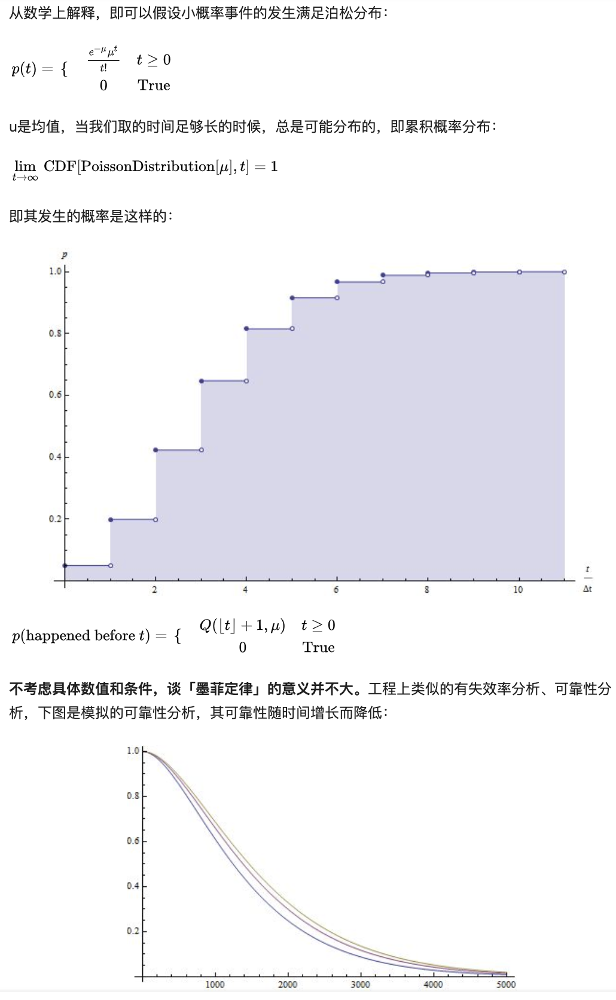

7.1. 墨菲定律(Murphy’s Law)¶
7.1.1. 原始定义¶
二十世纪西方文化三大发现之一
“墨菲定律”、“帕金森定律”和“彼德原理”并称为二十世纪西方文化三大发现
墨菲定律不是一种心理学效应，是一种数学推理，由爱德华·墨菲（Edward A. Murphy）提出，亦称墨菲法则、墨菲定理。
如果有两种或两种以上的方式去做某件事情，而其中一种选择方式将导致灾难，则必定有人会做出这种选择。根本内容是：如果事情有变坏的可能，不管这种可能性有多小，它总会发生。
Murphy’s law is an adage or epigram that is typically stated as: “Anything that can go wrong will go wrong”.
Yhprum’s law, where the name is spelled backwards, is “anything that can go right, will go right”
Note
原始定义被认为是「确认偏见的一种形式」，于是有了Yhprum定律，墨菲定律反过来的乐观使用
定律来源:
1949年，一位名叫爱德华·墨菲的空军上尉工程师，对他的某位运气不太好的同事随口开了句玩笑：
“如果一件事有可能被做坏，让他去做就一定会更坏。”
一句本无恶意的玩笑话最初并没有什么太深的含义，只是说出了坏运气带给人的无奈。
或许是这世界不走运的人太多，或许是人们总会犯这样那样错误的缘故，这句话被迅速扩散，最后竟然演绎成：
如果坏事情有可能发生，不管这种可能性有多小，它总会发生，并引起最大可能的损失。
7.1.2. 科学性的定律¶
在 设计系统 时，应该多考虑 墨菲定律：
任何事物都没有表面看起来那么简单
所有的事都会比你预计的时间长
可能出错的事总会出错
如果你担心某种情况发生，那么他就更有可能发生
“墨菲定律”的根本内容是“凡是可能出错的事有很大几率会出错”，指的是任何一个事件，只要具有大于零的机率，就不能够假设它不会发生。
让墨菲定律成立的前提有两个:
一个是大于零的概率。
另一个是时间够长。
「事情如果有变坏的可能，不管这种可能性有多小，它总会发生」，这句话是有前提条件的，即没有终止的时间。

产生条件¶
在数理统计中，有一条重要的统计规律：假设某意外事件在一次实验（活动）中发生的概率为p（p>0），则在n次实验（活动）中至少有一次发生的概率为P=1-（1-p）^n。由此可见，无论概率p多么小（即小概率事件），当n越来越大时，P越来越接近1。 这一结论被爱德华·墨菲应用于安全管理，他指出：做任何一件事情，如果客观上存在着一种错误的做法，或者存在着发生某种事故的可能性，不管发生的可能性有多小，当重复去做这件事时，事故总会在某一时刻发生。也就是说，只要发生事故的可能性存在，不管可能性多么小，这个事故迟早会发生的。
7.1.3. 其他¶
下面是墨菲定律的一些变种或推论:
人生哲学
１．别试图教猫唱歌，这样不但不会有结果，还会惹猫不高兴?
２．别跟傻瓜吵架，不然旁人会搞不清楚，到底谁是傻瓜?
３．不要以为自己很重要，因为没有你，太阳明天还是一样从东方升上来?
４．笑一笑，明天未必比今天好。
５．好的开始，未必就有好结果；坏的开始，结果往往会更糟。
处世原理
６．你若帮助了一个急需用钱的朋友，他一定会记得你——在他下次急需用钱的时候。
７．有能力的——让他做；没能力的──教他做；做不来的──管理他。
８．你早到了，会议却取消；你准时到，却还要等；迟到，就是迟了。
９．你携伴出游，越不想让人看见，越会遇见熟人。
爱情意义
１０．你爱上的人，总以为你爱上他是因为：他使你想起你的老情人。
１１．你最后硬着头皮寄出的情书；寄达对方的时间有多长，你反悔的时间就有多长。
生活常识
１２．东西越好，越不中用。
１３．一种产品保证６０天不会出故障，等于保证第６１天一定就会坏掉。
１４．东西久久都派不上用场，就可以丢掉；东西一丢掉，往往就必须要用它。
１５．你丢掉了东西时，最先去找的地方，往往也是可能找到的最后一个地方。
１６．你往往会找到不是你正想找的东西。
１７．你出去买爆米花的时候，银幕上偏偏就出现了精彩镜头。
１８．另一排总是动的比较快；你换到另一排，你原来站的那一排，就开始动的比较快了；你站的越久，越有可能是站错了排。
１９．一分钟有多长？ 这要看你是蹲在厕所里面，还是等在厕所外面。